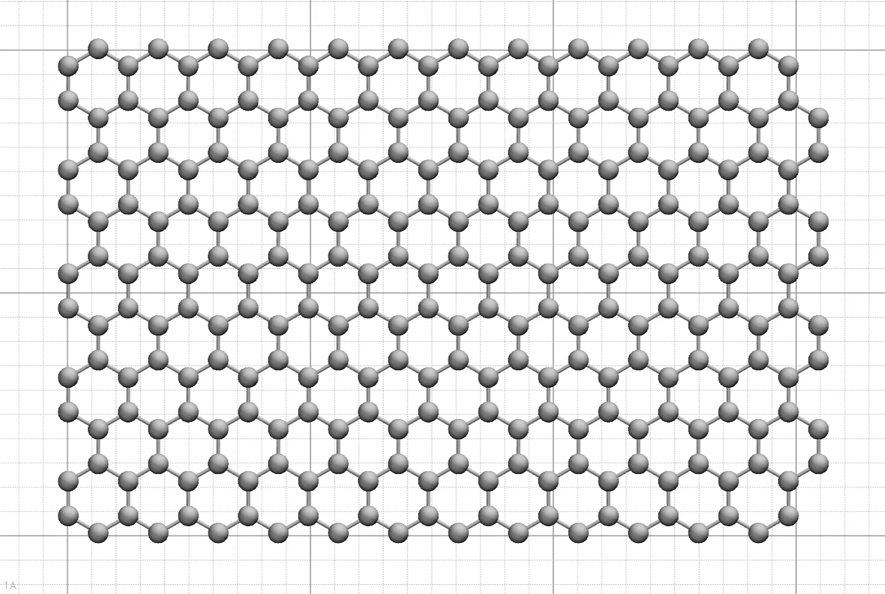
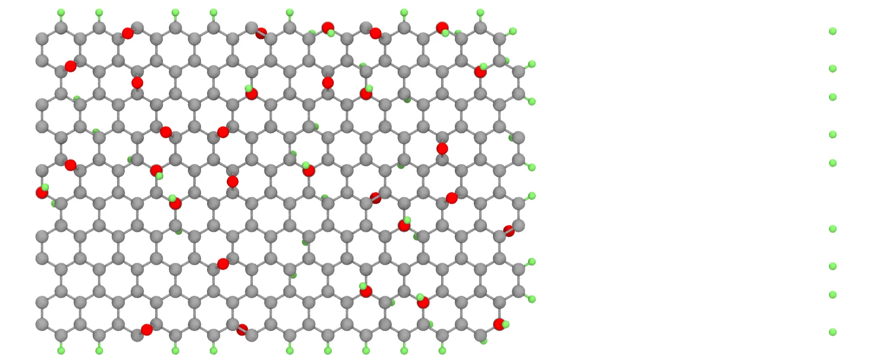
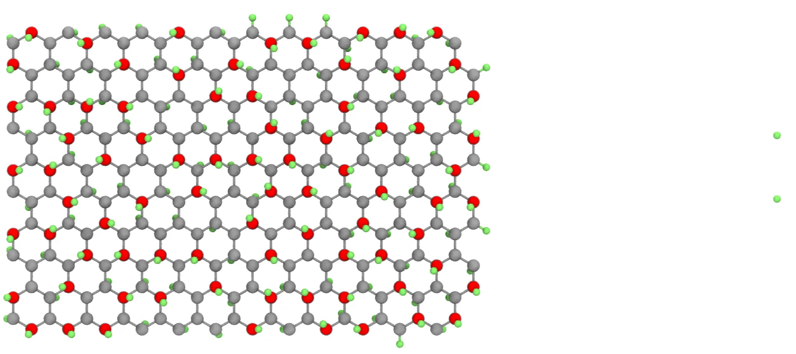
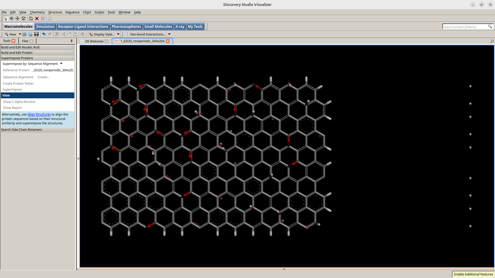
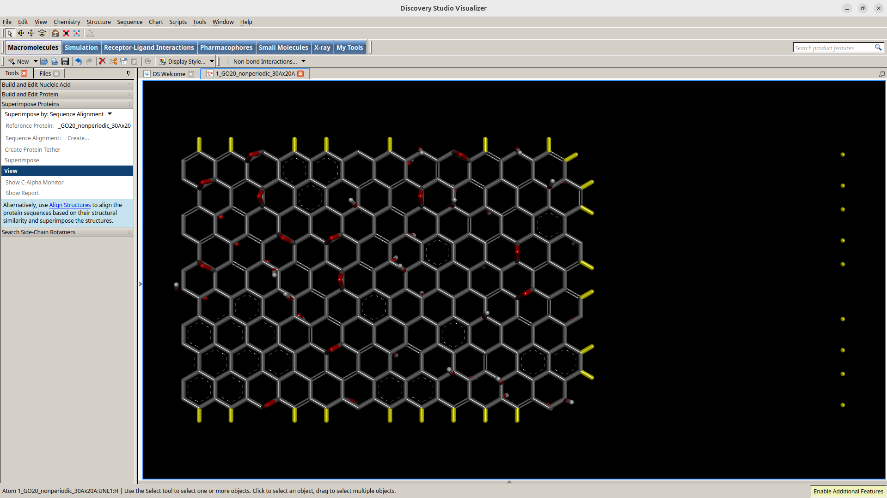
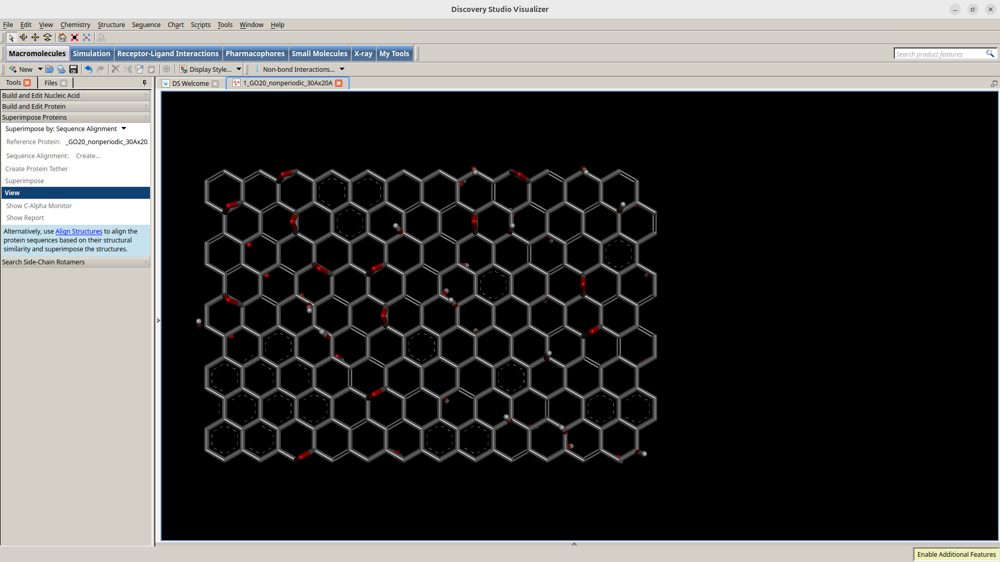
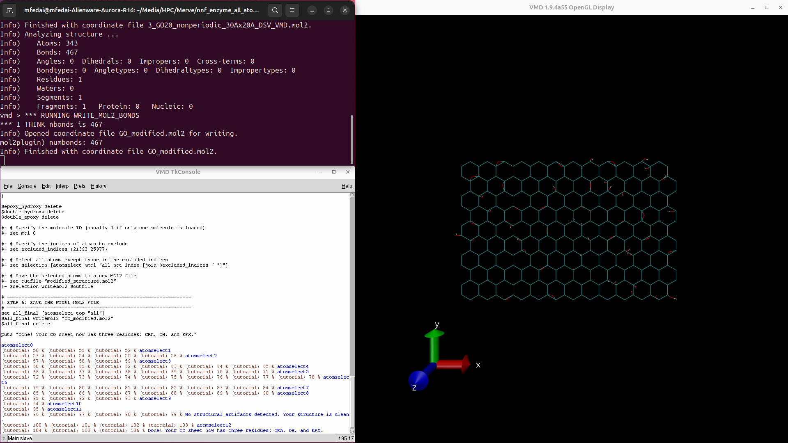
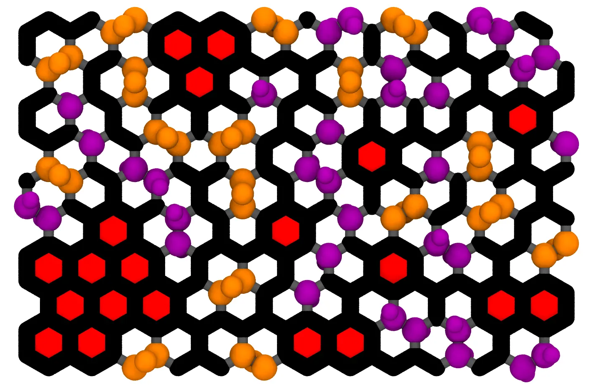

git clone https://github.com/IFM-molecular-simulation-group/HierGO.git
cd HierGO
Step 2: Build Graphene Tile as Template
Decide your target size (nm or Å) and map to factors
HierGO sets sheet dimensions by integer repeats of graphene’s 2D unit cell:
Lx(A˚)≈2.5×xfactor
Ly(A˚)≈2.5×yfactor
For example;
Target:3×2nm2 = 30×20A˚2 →Pick: xfactor 13 and yfactor 8
Target:20×20nm2 = 200×200A˚2 →Pick: xfactor 81 and yfactor 81
Decide if you want to have pristine graphene or one with holes: Use percentvac=0 to keep it pristine.
Choose periodic vs non-periodic: his depends on whether a molecular simulation package supports periodic continuous bonds (i.e., molecules or structures whose bonds wrap across periodic boundaries so that the bond from one end of the box seamlessly connects to the opposite side) depends on a few things: how bonds are represented/connected, whether the software allows atoms of a molecule to be split across images, and how wrap/unwrap & topology crossing is handled.
Periodic: Generally good option for MD simulations within GROMACS and LAMMPS based set ups
Non-periodic (-non_periodic): Convenient for cropping or building finite flakes. Use this option if using AMBER because it does not support periodic bonds (i.e., you cannot have a bond that crosses the periodic boundary and connects atoms on opposite sides of the simulation box).
Check terminal output to confirm the dimensions of the generated structure
Size: 13 8
Vacancy Amount: 0.0
Distribution: mixed
Creating sheet of size 32.123000000000005 x 21.391
Creating Defects of Sizes: []
Trim Cycle 0
Trim Cycle 1
Actual vacancy amount of 0.7692307692307736 percent due to trimming hanging carbon atoms
Check the generated PDB file template:It can be seen that it makes the whole sheet as a single residue named UNL. There are total of 258 atoms. The atom types are also not compatible so there is a few steps we need to do to fix all this. Also, visualize the structure for further inspection.
AUTHOR GENERATED BY NG TILE DECORATION
CRYST1 52.123 41.391 40.000 90.00 90.00 90.00 P1 1
ATOM 0 C UNL 1 1.841 1.775 0.000 1.00 0.00 C
ATOM 1 C UNL 1 0.605 2.484 0.000 1.00 0.00 C
ATOM 2 C UNL 1 0.605 3.908 0.000 1.00 0.00 C
ATOM 3 C UNL 1 1.839 4.620 0.000 1.00 0.00 C
...
ATOM 255 C UNL 1 31.493 18.867 0.000 1.00 0.00 C
ATOM 256 C UNL 1 30.257 19.576 0.000 1.00 0.00 C
ATOM 257 C UNL 1 30.257 21.000 0.000 1.00 0.00 C
Figure 1. Pristine graphene sheet. For better visualization of the size, the grid line is added.
Step 3: “Decorate” Graphene Tile
Low Oxidation Case
Copy this example command in terminal:Decide the oxidation level (--percento) and the hydroxyl:epoxy ratio (--fresh or --aged).
Check terminal output: Here, one can confirm the number of oxygen atoms added and which group is added in detail. For oxidation levels ≥ 40%, the reported statistics may deviate from the actual oxygen coverage and ratio.
Check the new generated PDB file:There are total of 374 atoms with the addition of H and O atoms. Again, the atom types are also not compatible, and it does not trim the H shown in green properly. There are obvious mistakes in the structure.
AUTHOR GENERATED BY NG TILE DECORATION
CRYST1 52.123 41.391 40.000 90.00 90.00 90.00 P1 1
ATOM 0 C UNL 1 1.841 1.775 0.000 1.00 0.00 C
ATOM 1 C UNL 1 0.605 2.484 0.000 1.00 0.00 C
ATOM 2 C UNL 1 0.605 3.908 0.000 1.00 0.00 C
ATOM 3 C UNL 1 1.839 4.620 0.000 1.00 0.00 C
...
ATOM 372 H UNL 1 29.018 22.712 0.000 1.00 0.00 H
ATOM 373 H UNL 1 32.358 19.369 0.000 1.00 0.00 H
ATOM 374 H UNL 1 31.124 21.499 0.000 1.00 0.00 H
Figure 2. 20% modified graphene oxide. gray shows Carbon, red shows Oxygen and green shows the Hydrogens added after the decorate command.
High Oxidation Case
Set up the command:Decide the oxidation level (--percento) and the epoxy:hydroxyl ratio (--fresh or --aged).
Check terminal output: At this high oxidation level, the original script fails to generate a valid structure. The output confirms that 60% oxidation was not successfully achieved.
Input parameters:
Reading file pristine_graphene_nonperiodic_30Ax20A.pdb
60.0% oxygen
[Epoxy,Hydroxyl] = 2:1
Adding 154 oxygen atoms:
O_hydroxyl: 32
O_dihydroxyl: 70
O_epoxy: 51
Warning: overlapping atoms may occur (di-hydroxyl placement failure)
Traceback (most recent call last):
File "/home/.../HierGO-master/Scripts/decorate-tile.py", line 1799, in <module>
main()
File "/home/.../HierGO-master/Scripts/decorate-tile.py", line 1783, in main
coords,atomtypes = add_oxygen_hydrogen(coords,atomtypes,abc,PossibleDefectSites,OxygenNumAndType)
^^^^^^^^^^^^^^^^^^^^^^^^^^^^^^^^^^^^^^^^^^^^^^^^^^^^^^^^^^^^^^^^^^^^^^^^^^^^^^
File "/home/.../HierGO-master/Scripts/decorate-tile.py", line 1547, in add_oxygen_hydrogen
NewO,NewH,PossibleDefectSites,o_up,o_down = add_all_dihydroxyl(NewO,NewH,OxygenNumAndType,coords,abc,PossibleDefectSites,NNList,o_up,o_down)
^^^^^^^^^^^^^^^^^^^^^^^^^^^^^^^^^^^^^^^^^^^^^^^^^^^^^^^^^^^^^^^^^^^^^^^^^^^^^^^^^^^^^^^^^^^^^^^^
File "/home/.../HierGO-master/Scripts/decorate-tile.py", line 1129, in add_all_dihydroxyl
PossibleDefectSites.remove(c2index)
ValueError: list.remove(x): x not in list
Run the modified decoration script:The modified version bypasses the original error and forces successful completion.
The script now runs without errors; however, the generated output may contain inaccurate values for the added functional groups. Initially, the program reports the expected modification ratio, but at high oxidation levels the actual decoration fails. When too many hydroxyl groups are added, there are no longer enough adjacent carbon sites available for epoxy formation, which requires two neighboring carbons.
Note: The modified script overrides these warnings and continues by adding mainly hydroxyl groups to achieve the target oxidation level. Therefore, it is essential to validate the output structure in later stages to confirm the actual oxidation composition and to correct any structural inconsistencies.
Inspect the generated PDB file:The decorated structure contains a total of 575 atoms, including newly added H and O atoms. However, the atom types remain inconsistent, and some hydrogen atoms (shown in green) are not trimmed properly, resulting in structural errors that must be corrected later.
AUTHOR GENERATED BY NG TILE DECORATION
CRYST1 52.123 41.391 40.000 90.00 90.00 90.00 P1 1
ATOM 0 C UNL 1 1.841 1.775 0.000 1.00 0.00 C
ATOM 1 C UNL 1 0.605 2.484 0.000 1.00 0.00 C
ATOM 2 C UNL 1 0.605 3.908 0.000 1.00 0.00 C
ATOM 3 C UNL 1 1.839 4.620 0.000 1.00 0.00 C
...
ATOM 572 H UNL 1 19.134 22.712 0.000 1.00 0.00 H
ATOM 573 H UNL 1 21.605 22.712 0.000 1.00 0.00 H
ATOM 574 H UNL 1 32.358 19.369 0.000 1.00 0.00 H
Figure 3. 60% modified graphene oxide (top-down view). gray shows Carbon, red shows Oxygen and green shows the Hydrogens added after the decorate command. Although only one side is visible, oxidation occurs on both surfaces of the sheet.
Step 4: Prepare Output for Parameterization (pdb → mol2)
Rename the PDB output file: GO20_nonperiodic_30Ax20A.pdb to 1_GO20_nonperiodic_30Ax20A.pdb or GO60_nonperiodic_30Ax20A.pdb to 1_GO60_nonperiodic_30Ax20A.pdb . This is not essential step, but it is included here because there will be several steps that follows saving new file pattern, adding number in the beginning of the filename will make it easier to know what was done in the protocol what file came next.
Open the PDB file in Discovery Studio Visualizer (DS Visualizer): Load the PDB output generated from HierGO (e.g.,1_GO20_nonperiodic_30Ax20A.pdb or 1_GO60_nonperiodic_30Ax20A.pdb
Note: Discovery Studio Visualizer may freeze or appear unresponsive if you have a very large sheet. Be patient, click “Wait” if prompted or allow the program to finish loading the full structure.
Another Note: You can use other software or methods to remove unwanted atoms. However, this tutorial demonstrates the process in DS visualizer because it provides a more user-friendly interface and has been verified to work reliably for this workflow.
Figure 4. Example screenshot loaded for the Discovery Studio Visualizer.
Remove hanging atoms, and the Hydrogen at the edges: Delete any loose atoms or hanging carbons that remain after the decoration step. Use the red “X” icon on the top toolbar or press Delete on your keyboard. Avoid using Cut tools, as they can break bonds incorrectly.
Figure 5: Example screenshot. Atoms to be removed shown in yellow.
Figure 6: Example screenshot, edge hydrogen and hanging atoms had been removed.
Save the cleaned structure:Export the updated coordinates as a new .pdb file from DS Visualizer. After cleaning the HierGO output in DS Visualizer, several key differences appear in the exported .pdb file, beyond the removal of loose or hanging atoms.
Note: The HierGO PDB is a raw coordinate dump. It contains atomic positions but lacks bonding or standard formatting cues used in molecular dynamics packages. The DSV-exported PDB adds missing topological structure (bonds and terminators), adopts HETATM notation, and ensures standardized formatting for downstream use. These changes make the DSV file better suited for conversion to MOL2 or parameterization in AMBER or GAFF, since tools like Antechamber rely on proper atom ordering and bond connectivity.
REMARK BIOVIA PDB file
REMARK Created: 2025-10-28T12:43:02Z
CRYST1 52.123 41.391 40.000 90.00 90.00 90.00 P1
HETATM 1 C UNL 1 1.841 1.775 0.000 1.00 0.00 C
HETATM 2 C UNL 1 0.605 2.484 0.000 1.00 0.00 C
HETATM 3 C UNL 1 0.605 3.908 0.000 1.00 0.00 C
...
CONECT 341 307
CONECT 342 308
CONECT 343 309
END
Convert to MOL2 format using VMD:Open the .pdb from the previous step (e.g., 2_GO20_nonperiodic_30Ax20A_DSV.pdb file in VMD. Go to File → Save Coordinates → Write Structure and select MOL2 as the output format. Save as 3_GO20_nonperiodic_30Ax20A_DSV_VMD.mol2.
@<TRIPOS>MOLECULE
generated by VMD
343 467 1 0 0
SMALL
NO_CHARGES
****
Energy = 0
@<TRIPOS>ATOM
1 C 1.8410 1.7750 0.0000 C 1 UNL 0.000000
2 C 0.6050 2.4840 0.0000 C 1 UNL 0.000000
3 C 0.6050 3.9080 0.0000 C 1 UNL 0.000000
...
464 306 340 1
465 307 341 1
466 308 342 1
467 309 343 1
@<TRIPOS>SUBSTRUCTURE
1 **** 1 TEMP 0 **** **** 0 ROOT
Comparison of opening 1_GO20_nonperiodic_30Ax20A.pdb vs 2_GO20_nonperiodic_30Ax20A_DSV.pdb in VMD.
1_GO20_nonperiodic_30Ax20A.pdb
...
Info) Using plugin pdb for structure file 1_GO20_nonperiodic_30Ax20A.pdb
Info) Determining bond structure from distance search ...
Info) Atoms: 375
Info) Bonds: 490
Info) Residues: 10
Info) Fragments: 10
...
The HierGO PDB does not contain CONECT records, so VMD must guess bonds based on interatomic distances. Because the sheet includes many close carbon atoms and dangling atoms near edges, VMD overestimates the number of fragments, splitting the sheet into 10 disconnected fragments. This fragmented topology makes it unreliable for parameterization or exporting to .mol2.
2_GO20_nonperiodic_30Ax20A_DSV.pdb
...
Info) Using plugin pdb for structure file 2_GO20_nonperiodic_30Ax20A_DSV.pdb
Info) Determining bond structure from distance search ...
Info) Eliminating bonds duplicated from existing structure...
Info) Atoms: 343
Info) Bonds: 467
Info) Residues: 1
Info) Fragments: 1
...
The DS Visualizer cleaned PDB includes explicit CONECT records, so VMD reads the true bond topology rather than guessing it. The structure is now treated as a single residue (UNL) and one continuous fragment, which is correct for a graphene sheet. The number of atoms is smaller because loose and hanging atoms were deleted in DSV. When saved as .mol2, VMD reports the correct number of bonds (467), producing a clean and consistent MOL2 file suitable for AMBER compatible GAFF parameterization.
Assign atom types and residues in VMD: Open the new .mol2 file (3_GO20_nonperiodic_30Ax20A_DSV_VMD.mol2) in a fresh VMD session and run the Tcl script to reassign atom types and residues. You can do this by typing the source command in the Tk Console or by copying and pasting the entire script contents and pressing Enter.
# ------------------------------------------------------------------------------
# Title: Graphene Oxide Atom Info Assignment Script (3 Residue Approach)
# ------------------------------------------------------------------------------
# Purpose:
# This script processes a large graphene oxide (GO) sheet in VMD by assigning
# atoms to three residues:
# 1) GRA - all unmodified carbons (and anything else not in OH or EPX)
# 2) OH - all hydroxyl-modified carbons, oxygens, and hydrogens
# 3) EPX - all epoxy-modified carbons and oxygens
#
# Usage:
# 1) Load your GO structure in VMD.
# 2) Run this script in the VMD console or with: `vmd -dispdev text -e this_script.tcl`.
#
# Output:
# "GO_modified.mol2" with three residues (GRA, OH, EPX).
#
# Author: Merve Fedai
# Date: 12/24/24
# ------------------------------------------------------------------------------
# Notes:
# - Atom types and partial charges come from gaff logic:
# c3, ca, ho, oh, os
# - Adjust distance cutoffs/criteria if needed.
# - This script assumes:
# - "name C" for carbons
# - "name O" for oxygens
# - "name H" for hydrogens
# - "resname UNL" for the original graphene base (if any).
# ------------------------------------------------------------------------------
# ----------------------------------------------------------------
# STEP 0: RESET ALL RESIDS
# ----------------------------------------------------------------
# 1) Set all residue IDs to 0 so we start from a clean slate
set allAtoms [atomselect top "all"]
$allAtoms set resid 0
$allAtoms delete
# ----------------------------------------------------------------
# STEP 1: ASSIGN DEFAULT RESID=1, RESNAME=GRA
# ----------------------------------------------------------------
# Everything (including all carbons, oxygens, hydrogens) becomes resid=1, GRA initially.
set defaultAll [atomselect top "all"]
$defaultAll set resid 1
$defaultAll set resname GRA
$defaultAll delete
# Now set sp² carbons to 'ca' as a baseline (unmodified GO).
# (We can override them later for epoxy/hydroxyl.)
set ca_carbons [atomselect top "name C"]
$ca_carbons set type ca
$ca_carbons delete
# ----------------------------------------------------------------
# STEP 2: ASSIGN HYDROXYL (OH) GROUPS TO RESID=2
# ----------------------------------------------------------------
# We'll identify:
# - Hydroxyl carbons: "name C and within 2.0 of name O"
# - Hydroxyl oxygens: "name O" (but you might refine to "within 2.0 of name C" or similar)
# - Hydroxyl hydrogens: "name H" (optionally within 2.0 or 1.5 of those oxygens)
#
# Then we override (resid=2, resname=OH) and set partial charges / types.
# 2A. Hydroxyl carbons
set hydroxyl_carbons [atomselect top "name C and within 2.0 of name O"]
$hydroxyl_carbons set resid 2
$hydroxyl_carbons set resname OH
$hydroxyl_carbons set type c3
$hydroxyl_carbons set charge 0.16
$hydroxyl_carbons delete
# 2B. Hydroxyl oxygens
set hydroxyl_oxygens [atomselect top "name O"]
$hydroxyl_oxygens set resid 2
$hydroxyl_oxygens set resname OH
$hydroxyl_oxygens set type oh
$hydroxyl_oxygens set charge -0.57
$hydroxyl_oxygens delete
# 2C. Hydroxyl hydrogens
set hydroxyl_hydrogens [atomselect top "name H"]
$hydroxyl_hydrogens set resid 2
$hydroxyl_hydrogens set resname OH
$hydroxyl_hydrogens set type ho
$hydroxyl_hydrogens set charge 0.41
$hydroxyl_hydrogens set name H1
$hydroxyl_hydrogens delete
# ----------------------------------------------------------------
# STEP 3: ASSIGN EPOXY (EPX) GROUPS TO RESID=3
# ----------------------------------------------------------------
# Identify epoxy carbons and oxygens (ringsize 3 from name C/O).
# Then override to resid=3, resname=EPX.
# 3A. Epoxy carbons
set epoxy_carbons [atomselect top "ringsize 3 from name C"]
$epoxy_carbons set resid 3
$epoxy_carbons set resname EPX
$epoxy_carbons set type c3
$epoxy_carbons set charge 0.16
$epoxy_carbons delete
# 3B. Epoxy oxygens
set epoxy_oxygens [atomselect top "ringsize 3 from name O"]
$epoxy_oxygens set resid 3
$epoxy_oxygens set resname EPX
$epoxy_oxygens set type os
$epoxy_oxygens set charge -0.32
$epoxy_oxygens delete
# ----------------------------------------------------------------
# STEP 4: RENAME OXYGENS TO O1
# ----------------------------------------------------------------
# Just for consistent naming in the output
set oxygens [atomselect top "name O"]
$oxygens set name O1
$oxygens delete
# ----------------------------------------------------------------
# STEP 5: CHECK FOR STRUCTURAL ARTIFACTS
# ----------------------------------------------------------------
# Note: Make further improvement to the script including;
# 1- Determine the resname of the defected carbon
# 2- Based on the resname determine which atoms to remove. For example, if the atom is EPX remove the hydroxyl based attached atoms.
# 3- Determine atoms' indeces that are causing the defect. And save the structure exluding these indeces.
# Check for c3 atoms meeting specific criteria and warn users if any are found
set epoxy_hydroxy [atomselect top "type c3 and (within 2 of type os) and (within 2 of type oh)"]
set double_hydroxy [atomselect top "type c3 and (within 2 of type oh) and (within 2 of z \"-1.700000.*\") and (within 2 of z 1.700000)"]
set double_epoxy [atomselect top "type c3 and (within 2 of type oh) and (within 2 of z 1.283000) and (within 2 of z \"-1.283000.*\")"]
if {[$epoxy_hydroxy num] > 0} {
set epoxy_hydroxy_ids [$epoxy_hydroxy list]
puts "WARNING: Structural artifact detected! C3 atom with epoxy and hydroxyl groups on the same carbon. Atom IDs: $epoxy_hydroxy_ids"
}
if {[$double_hydroxy num] > 0} {
set double_hydroxy_ids [$double_hydroxy list]
puts "WARNING: Structural artifact detected! C3 atom with double hydroxyl addition on opposite sides of same carbon. Atom IDs: $double_hydroxy_ids"
}
if {[$double_epoxy num] > 0} {
set double_epoxy_ids [$double_epoxy list]
puts "WARNING: Structural artifact detected! C3 atom with double epoxy addition on opposite sides of same carbon. Atom IDs: $double_epoxy_ids"
}
if {([$epoxy_hydroxy num] == 0) && ([$double_hydroxy num] == 0) && ([$double_epoxy num] == 0)} {
puts "No structural artifacts detected. Your structure is clean."
}
$epoxy_hydroxy delete
$double_hydroxy delete
$double_epoxy delete
#~ # Specify the molecule ID (usually 0 if only one molecule is loaded)
#~ set mol 0
#~ # Specify the indices of atoms to exclude
#~ set excluded_indices {21393 25977}
#~ # Select all atoms except those in the excluded_indices
#~ set selection [atomselect $mol "all not index [join $excluded_indices " "]"]
#~ # Save the selected atoms to a new MOL2 file
#~ set outfile "modified_structure.mol2"
#~ $selection writemol2 $outfile
# ----------------------------------------------------------------
# STEP 6: SAVE THE FINAL MOL2 FILE
# ----------------------------------------------------------------
set all_final [atomselect top "all"]
$all_final writemol2 "GO_modified.mol2"
$all_final delete
puts "Done! Your GO sheet now has three residues: GRA, OH, and EPX."
This script automatically classifies all atoms into three residue groups: GRA (unmodified graphene carbons), OH (hydroxyl groups), and EPX (epoxy groups), and assigns GAFF-style atom types (ca, c3, oh, ho, os) with representative partial charges. It also checks for possible structural artifacts such as overlapping groups or carbons bonded to both epoxy and hydroxyl atoms. When executed correctly, the VMD console will display progress messages and finish with:
No structural artifacts detected. Your structure is clean.
Done! Your GO sheet now has three residues: GRA, OH, and EPX.
Figure 7. Example screenshot for the GO20 that is generated.
If the output instead reports structural defects (for example, “WARNING: Structural artifact detected! …”), it will list the specific atom IDs where these issues occur. This means some artifacts were not fully removed during the earlier DS Visualizer cleaning step. In that case, reopen the structure in DS Visualizer, locate and delete those problematic atoms, save the corrected PDB, and repeat the conversion and assignment steps. When no warnings appear, verify that the final output file GO_modified.mol2 loads cleanly in VMD with the correct residue and atom assignments.
Note: For consistency with the tutorial workflow, rename the output file GO_modified.mol2 to 4_GO_modified.mol2 before proceeding to the next step.
Side Note: Explanation for reason why we set atom types compatible for GAFF (not GAFF2) for 1_GO_atom_info_assignment.tcl?
We format atom types for GAFF rather than GAFF2 to keep the parameter space small and fully covered by an existing, validated FRCMOD file from another Yingling group alumnus, Dr. Hoshin Kim. In practice, GAFF2 dramatically increases the number of distinct atom types and consequently generates a flood of new bond, angle, dihedral, and improper terms that Antechamber would require for a large GO patch. Each run produced fresh, unique terms needing one-off parameterization, forcing us to slice the sheet into smaller patches (since Antechamber cannot handle very large systems), fit parameters iteratively, and manually merge an ever-expanding FRCMOD. This made the process impractical for large-scale GO systems.
By mapping GO to a minimal, GAFF-compatible set, ca (aromatic sp² C) for all unmodified carbons and c3 (sp³ C) for hydroxyl/epoxy carbons, plus oh/ho/os for O/H atoms; we can directly reuse the alumni FRCMOD, avoid the endless parameter chase, and maintain a reproducible workflow that scales efficiently.
While atom types such as c1 and c2 would be more chemically appropriate for edge carbons or regions with partial re-hybridization, assigning them as ca represents only a minor compromise for very large GO sheets. This simplification sacrifices some chemical granularity (for example, subtle differences among modified sp³ carbons are not distinguished), but it delivers a stable, parameter-complete model that runs immediately in AMBER, while preserving the essential physics between aromatic and sp³-modified regions. If higher specificity is needed later, GAFF2-level types can be selectively reintroduced for small, representative fragments, and the newly validated parameters can then be ported back into the main FRCMOD.
Check the modified MOL2 file and finalize:Reopen a fresh VMD and visually confirm correctness of atom typing and connectivity before proceeding next steps. This cleaned and typed .mol2 file is now ready for force-field parameterization or charge derivation.
@<TRIPOS>MOLECULE
generated by VMD
343 467 1 0 0
SMALL
USER_CHARGES
****
Energy = 0
@<TRIPOS>ATOM
1 C 1.8410 1.7750 0.0000 ca 1 GRA 0.000000
2 C 0.6050 2.4840 0.0000 ca 1 GRA 0.000000
3 C 0.6050 3.9080 0.0000 ca 1 GRA 0.000000
4 C 1.8390 4.6200 0.0000 ca 1 GRA 0.000000
5 C 4.3120 1.7750 0.0000 ca 1 GRA 0.000000
6 C 3.0760 2.4840 0.0000 ca 1 GRA 0.000000
7 C 3.0760 3.9080 0.0000 ca 1 GRA 0.000000
8 C 4.3100 4.6200 0.0000 ca 1 GRA 0.000000
9 C 6.7830 1.7750 0.0000 c3 3 EPX 0.160000
10 C 5.5470 2.4840 0.0000 ca 1 GRA 0.000000
...
340 H1 24.2780 17.0930 -2.5000 ho 2 OH 0.410000
341 H1 4.1120 14.9400 -2.5000 ho 2 OH 0.410000
342 H1 16.8670 5.7020 -2.5000 ho 2 OH 0.410000
343 H1 23.8780 12.8200 -2.5000 ho 2 OH 0.410000
@<TRIPOS>BOND
1 1 6 1
2 1 2 1
3 2 3 1
4 3 4 1
...
464 306 340 1
465 307 341 1
466 308 342 1
467 309 343 1
@<TRIPOS>SUBSTRUCTURE
1 **** 1 TEMP 0 **** **** 0 ROOT
Step 5: Validate and Finalize the Modified GO Structure (mol2)
After completing the atom-type assignment, several custom scripts can be run to extract structural data and confirm that the decorated graphene oxide sheet was generated correctly.
Run 2_atom_type_counter.tcl to check the distribution of GAFF atom types in your system. This script counts all atom types (e.g., ca, c3, oh, os, ho) and prints a concise summary in the VMD console.
# ------------------------------------------------------------------------------
# Title: Atom Type Counter Script for VMD
# ------------------------------------------------------------------------------
# Purpose:
# This script determines the number of atoms corresponding to specific atom types
# in a molecular structure loaded in VMD. The script uses atom selection
# commands to filter atoms by their type and outputs the count for each
# specified atom type.
#
# Usage:
# - Load this script in VMD after loading a molecular file (e.g., PDB or PSF).
# - Modify the list of atom types (`atom_types`) as per your requirements.
# - Run the script in the VMD Tcl console.
#
# Requirements:
# - VMD (Visual Molecular Dynamics) must be installed and the molecular file
# should be loaded prior to running this script.
# - Atom types should be defined in the molecular file (e.g., via topology or
# parameter files).
#
# Output:
# The script prints the count of atoms for each specified atom type to the
# console.
#
# Author: Merve Fedai
# Date: 12/24/2024
# ------------------------------------------------------------------------------
# Define the atom types to count
# Modify this list to include the atom types relevant to your system
set atom_types [list "ca" "c3" "oh" "os" "ho"]
# Initialize a dictionary to store counts for each atom type
array set atom_counts {}
# Iterate over each atom type to count matching atoms
foreach atom_type $atom_types {
# Select atoms matching the current atom type
set sel [atomselect top "type $atom_type"]
# Get the number of atoms in the selection
set count [$sel num]
# Store the count in the dictionary
set atom_counts($atom_type) $count
# Free the selection to release memory
$sel delete
}
# Output the results
puts "Atom Type Counts:"
foreach atom_type $atom_types {
puts " - $atom_type: $atom_counts($atom_type)"
}
# End of Script
# ------------------------------------------------------------------------------
For example for this tutorial structure 4_GO_modified.mol2 we get,
...
Atom Type Counts:
- ca: 190
- c3: 68
- oh: 34
- os: 17
- ho: 34
Note: Here ca shows all unmodified carbon atoms, c3 shows all carbons that are modified with epoxy and hydroxyl including the onces in the edges, oh shows all hydroxyl oxygens, and os shows all epoxy oxygens, and ho shows hydroxyl hydrogens. Looking back to the original output from HierGO the results match so far.
Run 3_C:O_ratio.tcl to calculate the carbon-to-oxygen (C:O) ratio and determine the actual oxidation level of the graphene oxide sheet. The script automatically identifies all C and O1 atoms, counts them, and reports both totals along with the scaled ratio and oxidation percentage.
# ------------------------------------------------------------------------------
# Title: Graphene Oxide C:O Ratio and Oxidation Rate Calculator
# ------------------------------------------------------------------------------
# Purpose:
# This script analyzes a graphene oxide (GO) structure in VMD to determine:
# 1) The total number of Carbon (C) and Oxygen (O/O1) atoms
# 2) The atomic C:O ratio (scaled to C:1)
# 3) The oxidation rate defined as (O/C) × 100
#
# Description:
# This script validates the effective oxidation rate obtained from HierGO
# functionalization by comparing the number of oxygen atoms added relative
# to the total number of carbon atoms. It reports both the C:O ratio and
# the percent oxygen content per carbon atom (%O/C), matching HierGO’s
# internal convention for oxidation level.
#
# Usage:
# 1) Load your GO structure (.mol2) in VMD.
# 2) In the Tk Console, run:
# source 3_C:O_ratio.tcl
#
# Notes:
# - Oxidation rate = (N_O / N_C) × 100
# - The result directly corresponds to HierGO’s “--percento” target.
# - Provides optional oxygen breakdown by residue (GRA, OH, EPX) to verify
# that functionalization is spatially consistent.
#
# Author: Merve Fedai
# Date: 12/24/2024
# Last Update Date: 10/28/2025
# ------------------------------------------------------------------------------
# ----------------------------------------------------------------
# STEP 0: Pick the Current Molecule
# ----------------------------------------------------------------
if {[molinfo num] == 0} {
puts "No molecules loaded."
return
}
set mol [molinfo top]
# ----------------------------------------------------------------
# STEP 1: Select Total Carbon Atoms
# ----------------------------------------------------------------
# Select all carbon atoms named "C"
set selC [atomselect $mol "name C"]
set nC [$selC num]
# ----------------------------------------------------------------
# STEP 2: Select Total Oxygen Atoms (robust to naming)
# ----------------------------------------------------------------
# Prefer O1 (pipeline convention); fallback to element O
set selO1 [atomselect $mol "name O1"]
if {[$selO1 num] > 0} {
set selO $selO1
} else {
set selO [atomselect $mol "element O"]
}
set nO [$selO num]
# ----------------------------------------------------------------
# STEP 3: Calculate C:O Ratio and Oxidation Percentage (O/C)
# ----------------------------------------------------------------
if {$nC == 0} {
puts "No carbon atoms found — cannot compute oxidation ratio."
$selC delete
$selO delete
return
}
# C:O ratio scaled to 'C:1' (prints as C:O = X:1)
set ratioCO [expr {($nO > 0) ? double($nC)/double($nO) : "Inf"}]
# Oxidation rate defined as atomic ratio of O/C × 100
set percO [expr {100.0 * double($nO) / double($nC)}]
# ----------------------------------------------------------------
# STEP 4: Print Summary
# ----------------------------------------------------------------
puts "Total Carbon atoms (C): $nC"
puts "Total Oxygen atoms (O): $nO"
if {$nO > 0} {
puts [format "C:O Ratio (scaled): %.4g:1" $ratioCO]
} else {
puts "C:O Ratio (scaled): ∞:1 (no oxygens found)"
}
puts [format "Oxidation Rate (O/C × 100): %.3f%%" $percO]
# ----------------------------------------------------------------
# STEP 5: Optional Oxygen Breakdown by Residue (GRA/OH/EPX)
# ----------------------------------------------------------------
# These only print if at least one atom matches; harmless otherwise.
set selO_OH [atomselect $mol "resname OH and (name O1 or element O)"]
set selO_EPX [atomselect $mol "resname EPX and (name O1 or element O)"]
set nO_OH [$selO_OH num]
set nO_EPX [$selO_EPX num]
if {$nO_OH > 0 || $nO_EPX > 0} {
puts "Oxygens by residue: OH=$nO_OH, EPX=$nO_EPX, Other=[expr {$nO - $nO_OH - $nO_EPX}]"
}
# ----------------------------------------------------------------
# STEP 6: Cleanup
# ----------------------------------------------------------------
$selC delete
$selO delete
$selO_OH delete
$selO_EPX delete
# ----------------------------------------------------------------
# End of Script
# ----------------------------------------------------------------
For example for this tutorial structure 4_GO_modified.mol2 we get,
...
Total Carbon atoms (C): 258
Total Oxygen atoms (O): 51
C:O Ratio (scaled): 5.059:1
Oxidation Rate (O/C × 100): 19.767%
Oxygens by residue: OH=34, EPX=17, Other=0
These results provide a quantitative check of the oxygen incorporation. For this system, the oxidation rate (19.8%) closely matches the target value of 20%, confirming that HierGO’s prediction is accurate. At higher oxidation levels, however, larger deviations can occur, especially when using the modified decorate-tile_modified.py script, which bypasses placement constraints. In those cases, the script may report artificially high oxidation levels (even up to 100%), but validation with this 3_C:O_ratio.tclstep typically reveals the actual achievable oxidation, which can be much lower (e.g., ~65%).
(Optional) Run 4_snapshot.tcl for visual confirmation. This script generates a color-coded 3D view in VMD 1.9.4 where epoxy groups appear in orange, hydroxyl groups in purple, and unmodified carbons in black lines. It highlights complete, unmodified aromatic rings by filling redintohexagons, allowing easy identification of hydrophobic patches. This visualization helps confirm both spatial distribution and surface heterogeneity of oxidation sites.
# ------------------------------------------------------------------------------
# Title: VMD Display and Visualization Script for Graphene Oxide (GO)
# ------------------------------------------------------------------------------
# Purpose:
# This script provides a standardized visual setup in VMD for graphene oxide
# structures generated and processed through the HierGO workflow. It highlights
# the spatial distribution of functional groups and hydrophobic regions by
# applying distinct visual styles and colors to each residue type.
#
# Description:
# The script configures the VMD display environment and assigns visual
# representations for residues as follows:
# - GRA (unmodified graphene regions): black licorice and paperchain view
# - EPX (epoxy-modified carbons): orange
# - OH (hydroxyl-modified carbons): purple
#
# In this visualization:
# • Epoxy and hydroxyl groups are clearly distinguished by color.
# • Unmodified carbons are shown as black frameworks.
# • Fully unmodified rings are automatically outlined in red, visually
# representing hydrophobic domains or pristine graphene patches.
#
# Usage:
# 1) Load your GO-modified structure in VMD.
# 2) Open the Tk Console and run:
# source 4_snapshot.tcl
# 3) Adjust the view, zoom, or render settings as needed.
#
# Notes:
# - This step is mainly for visualization and structural validation; it does
# not modify coordinates.
# - The color scheme helps confirm whether functional groups are uniformly
# distributed or clustered.
# - Hydrophobic patches appear as red-filled ring structures surrounded by
# black outlines.
#
# Author: Merve Fedai
# Date: 12/24/2024
# Last Update Date: 10/28/2025
# ------------------------------------------------------------------------------
# ------------------------------------------------------------------------------
# Set Display Properties
# ------------------------------------------------------------------------------
display projection Orthographic
display rendermode GLSL
display shadows off
display ambientocclusion on
display aodirect 0.400000
color Display Background white
color Axes Labels black
axes location off
display depthcue off
scale by 1.200000
# ------------------------------------------------------------------------------
# Molecular Representation Setup
# ------------------------------------------------------------------------------
# Initial molecular representation
mol modstyle 0 0 Licorice 0.300000 82.000000 82.000000
mol modmaterial 0 0 AOChalky
mol modcolor 0 0 Chain
# Set chain color and adjust RGB for Chain X to gray
mol color Chain
color Chain X gray
color change rgb 2 gray 0.781095 0.781095 0.781095
# Update molecular representation
mol representation Licorice 0.300000 82.000000 82.000000
mol selection all
mol material AOChalky
# ------------------------------------------------------------------------------
# Add Representation for Specific Residues
# ------------------------------------------------------------------------------
# Add a new representation for selected residues
mol addrep 0
mol modselect 1 0 resname EPX OH
mol modstyle 1 0 CPK 2.000000 0.300000 82.000000 82.000000
mol modcolor 1 0 ResName
mol material AOChalky
# ------------------------------------------------------------------------------
# Representation for Residue GRA
# ------------------------------------------------------------------------------
# Licorice representation for GRA residues (overall structure)
mol addrep 0
mol modselect 2 0 resname GRA
mol modstyle 2 0 Licorice 0.500000 82.000000 82.000000
mol modcolor 2 0 ResName
mol material AOChalky
# PaperChain representation for GRA residues (highlighting specific feature)
mol representation PaperChain 1.000000 10.000000
mol selection resname GRA
mol material AOChalky
mol addrep 0
mol modstyle 3 0 PaperChain 1.000000 10.000000
# ------------------------------------------------------------------------------
# Set Colors for Specific Residues
# ------------------------------------------------------------------------------
color Resname EPX orange
color Resname OH purple
color Resname GRA black
# ------------------------------------------------------------------------------
# Render Settings and Final Output
# ------------------------------------------------------------------------------
#display rendermode Tachyon RTX RTRT
#render Tachyon /home/merve/Desktop/HierGO-master/Test/GO_all_percentages/GO5%/color_by_resname "/usr/local/lib/vmd/tachyon_LINUXAMD64" -aasamples 12 %s -format TARGA -res 3000 3000 -o %s.tga
For example for this tutorial structure 4_GO_modified.mol2 we get,
Figure 8. Detailed visualization of the graphene oxide after 4_snapshot.tcl
This allows for visual check verification for the oxidation script produced the expected balance of aromatic, hydroxyl, and epoxy atoms. For example check this note below
Note: The oxidation rate can be directly estimated from the C:O ratio using the following relationship: OxidationRate=[NO/NC]×100
where NO is the number of oxygen atoms and NC is the number of carbon atoms.
Using your data from the 3_C:O_ratio.tcl output we got 258 Carbon atoms and 51 oxygen atoms, this results in 16.5% oxidation rate. So, even though the HierGO input was set to 20%, the actual oxidation level calculated from the final structure is ≈16.5%. This discrepancy reflects what you already discussed earlier in the tutorial at higher or even moderate oxidation levels, the script may fail to add all requested oxygen atoms due to limited available sites.
Run 5_mol2_substruct_numpy.py This is written by Dr. James Peerless (alumnus in Yingling Group). This Python script rebuilds the SUBSTRUCTURE section of the .mol2 file, ensuring that all residue and connectivity information is correctly formatted for downstream use in AMBER. It renumbers residues sequentially, updates the molecular header, and produces a clean output file that can be directly used for parameterization.
# In the terminal
./5_mol2_substruct_numpy.py -i 4_GO_modified.mol2 -o 5_GO20_modified_final.mol2
# If that doesnt work use
python3 5_mol2_substruct_numpy.py -i 4_GO_modified.mol2 -o 5_GO20_modified_final.mol2
You can also add "python3" to the beginning of the script if this doesn't work.
#!/usr/bin/python
'''
Mol2 Substrucuture Builder - mol2_substruct.py
Author: James Peerless
Yingling Group
NC State University
Date Created: Mar 05, 2017
Date Modified: Apr 10, 2017
Purpose: Rebuild the SUBSTRUCTURE section of a Tripos Mol2 format
molecular structure file. Requires that residue info is still
contained in ATOM section.
Usage: mol2_substruct.py [-h] -i input [-o output]
input: string with Mol2 filename with missing substructure
info.
output: string for output filename. (Optional - default =
'substruct_out.mol2')
Notes/Bugs: Resid's renumbered so that they are sequential (no skipping).
This is necessary for tLeap, but will change resid's.
Atom section is no longer fixed-width. (Does not affect AMBER
or VMD, but may affect others.)
NOT SPEED OPTIMIZED - iterators used a lot. Bench mark is
1-2 seconds for 130,000 atoms.
'''
##############################################################################
# Initialization #
##############################################################################
# Import necessary packages
import time
import argparse
import numpy as np
# Start the clock
t_start = time.time()
update = 1
# Inputs
parser = argparse.ArgumentParser(description='This script repopulates missing'\
' SUBSTRUCTURE sections of Mol2 format '\
' structure files. \nWritten by James Peerless')
parser.add_argument('-i','--input',help='Input Mol2 file',required=True)
parser.add_argument('-o','--output',default='substruct_out.mol2', \
help='Output Mol2 file name (default = '\
'substruct_out.mol2',required=False)
args = parser.parse_args()
# DEBUG ONLY
#args.input = 'HA_stripped.mol2'
#args.output = 'substruct_out.mol2'
ifname = str(args.input)
ofname = str(args.output)
##############################################################################
# Get Mol Info #
##############################################################################
mol_hln = -9999
print('Reading', ifname, '...')
# Save all line info from original file
with open(ifname) as infile:
lines = infile.readlines()
# Extract header positions and number of atoms
for line in lines:
if '@<TRIPOS>MOLECULE' in line:
mol_hln = lines.index(line)
if lines.index(line) == (mol_hln+2):
num_atms = int(line.split()[0])
if '@<TRIPOS>ATOM' in line:
atm_hln = lines.index(line)
break
##############################################################################
# Output data into outfile #
##############################################################################
# Remove last line
lines = lines[:-1]
# Correct residue numbers so that they are sequential (also split atom lines
# to use in condtructing SUBSTRUCTURE section
old_res_num = 0
n = 0
split_atm_lines = []
for line_n in range(atm_hln+1,(atm_hln+num_atms+1)):
atm_line = lines[line_n].split()
res_num = int(atm_line[6])
if res_num != old_res_num:
n = n + 1
old_res_num = res_num
atm_line[6] = str(n)
split_atm_lines.append(atm_line)
atm_line.append('\n')
lines[line_n] = ' '.join(atm_line)
# Set info line w/correct n_res
n_res = n
mol_info_ln = lines[mol_hln+2].split()
lines[mol_hln+2] = mol_info_ln[0]+' '+mol_info_ln[1]+' '+str(n_res)\
+' 0 0 \n'
# Construct array from ATOM section
atoms = np.asarray(split_atm_lines)
atoms_subinfo = atoms[:, (0,6,7)]
# Construct SUBSTRUCTURE array
nres = np.shape(np.unique(atoms_subinfo[:,1]))[0]
subinfo_resid = []
junk_tail = np.reshape(np.asarray(np.repeat('**** 0 **** ****', nres)), (nres,1))
for i in range(1, nres + 1):
subinfo_resid.append(np.where(atoms_subinfo[:,1] == str(i))[0][0])
subinfo = atoms[subinfo_resid,:]
subinfo = subinfo[:, (6,7,0)]
subinfo = np.hstack((subinfo, junk_tail))
# Convert to list and change resid's and atom id's to fixed-width strings
subinfo_list = subinfo.tolist()
for i in subinfo_list:
i[0] = '{0:>7}'.format(str(i[0]))
i[2] = '{0:>13}'.format(str(i[2]))
# Append new SUBSTRUCTURE section to "lines"
for subinfo_line in subinfo_list:
lines.append(' '.join(subinfo_line)+'\n')
# Print out all lines from header, modified ATOM stection
print('Writing', ofname, '...')
with open(ofname, 'w') as outfile:
outfile.write(''.join(lines))
##############################################################################
# Denoument #
##############################################################################
total_time = time.time() - t_start
print('Success!')
print('Excecution time: %.2f min for %i atoms' % (total_time/60, num_atms))
Example output:
./5_mol2_substruct_numpy.py -i 4_GO_modified.mol2 -o 5_GO20_modified_final.mol2
Reading 4_GO_modified.mol2 ...
Writing 5_GO20_modified_final.mol2 ...
Success!
Excecution time: 0.00 min for 343 atoms
@<TRIPOS>MOLECULE
generated by VMD
343 467 110 0 0
SMALL
USER_CHARGES
****
Energy = 0
@<TRIPOS>ATOM
1 C 1.8410 1.7750 0.0000 ca 1 GRA 0.000000
2 C 0.6050 2.4840 0.0000 ca 1 GRA 0.000000
3 C 0.6050 3.9080 0.0000 ca 1 GRA 0.000000
4 C 1.8390 4.6200 0.0000 ca 1 GRA 0.000000
5 C 4.3120 1.7750 0.0000 ca 1 GRA 0.000000
6 C 3.0760 2.4840 0.0000 ca 1 GRA 0.000000
7 C 3.0760 3.9080 0.0000 ca 1 GRA 0.000000
8 C 4.3100 4.6200 0.0000 ca 1 GRA 0.000000
9 C 6.7830 1.7750 0.0000 c3 2 EPX 0.160000
...
342 H1 16.8670 5.7020 -2.5000 ho 110 OH 0.410000
343 H1 23.8780 12.8200 -2.5000 ho 110 OH 0.410000
@<TRIPOS>BOND
1 1 6 1
2 1 2 1
3 2 3 1
...
465 307 341 1
466 308 342 1
467 309 343 1
...
@<TRIPOS>SUBSTRUCTURE
1 GRA 1 **** 0 **** ****
2 EPX 9 **** 0 **** ****
...
107 GRA 258 **** 0 **** ****
108 OH 259 **** 0 **** ****
109 EPX 283 **** 0 **** ****
110 OH 300 **** 0 **** ****
Note: This file is now ready for the simulation setup take the GO_gaff_Hoshin.frcmod One thing to note is that if the file is reopened in DS Visualizer, it will not recognize the correct atoms due to changes in the atom type definitions.
Note (Optional): This model is currently sufficient for running simulations involving surfaces in aqueous solutions or water droplet systems. However, if these surfaces are to be used in conjunction with other biomolecules, such as enzymes, the atom names and residue names will need to be modified, and the entire surface should be assigned a single residue ID.
Graphene oxide sheets can be misidentified as protein in VMD and AMBER/LEaP due to their atom and residue naming conventions. For example in VMD, a residue is classified as protein if it contains atoms named C, N, CA, and O, so GO atoms labeled simply C or O may trigger incorrect protein selection. Similarly, fragmented or inconsistent GO residue definitions can cause LEaP warnings, residue merging, and connect0/connect1 failures when proteins are present. To prevent these issues, the entire sheet is reassigned to a single residue (GRO) with a unified residue ID, and atom names are normalized (C→C1, O→O1, H→H1). This ensures clean topology generation and avoids misclassification in both VMD and LEaP.
To fix this possible issue, one can load the final .mol2 structure and reassign the atom names, residue names and residue ids as shown below.
# Use this when GO MOL2 residue definitions are corrupted and cause LEaP errors.
# This ensures the entire graphene or graphene oxide sheet is treated cleanly
# as one residue (GRO), avoiding:
# - "unusual bond between residues" warnings,
# - LEaP residue merging,
# - connect0/connect1 assignment failures.
# Note: this was added later for systems with a protein due to issues
# encountered with the misidentification of resname GRA, OH, and EPX as part of protein.
# Graphene oxide (GRA, OH, EPX)
set surface [atomselect 0 "resname GRA OH EPX"]
# Apply only to the surface (Molecule ID 0)
$surface set resid 1
$surface set resname GRO
# Normalize atom naming to keep consistency
set carbons [atomselect 0 "name C or name C1"]
$carbons set name C1
$carbons delete
# Normalize atom naming to keep consistency
set oxygens [atomselect 0 "name O or name O1"]
$oxygens set name O1
$oxygens delete
set hydrogens [atomselect 0 "name H or name H1"]
$hydrogens set name H1
$hydrogens delete
$surface update
$surface writemol2 6_SurfaceCombinedGRO.mol2

.png)
{kind=link}
{kind=link}
{kind=link}
{kind=link}
{kind=link}
{kind=link}
{kind=link}
{kind=link}
{kind=link}
{kind=link}